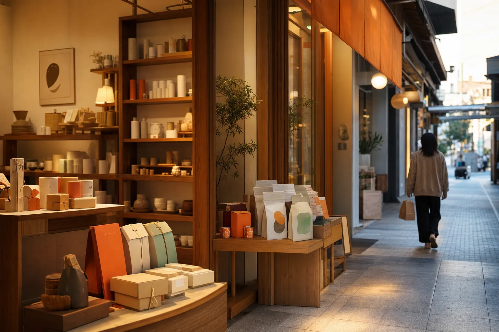

S01 / 雲林縣斗六市
斗六店
在商圈裡，很多人只是路過。我們把伴手禮放在入口，也把日常用品留在裡面，讓你不管是要帶點嘉義回去，或只是補一瓶洗面乳，都能慢慢逛。
- 店型
- 跨縣市型
- 開幕
- 2021.03
- 空間
- 132㎡
- 主打
- 伴手禮、保健
IN THIS STORE
本店選品
跨縣市來的客人，常常是為了伴手禮禮盒特地繞過來一趟。
門市資訊為教學模擬資料，頁面只標示到行政區，避免提供過細的外部聯絡資訊。

S01 / 雲林縣斗六市
在商圈裡，很多人只是路過。我們把伴手禮放在入口，也把日常用品留在裡面，讓你不管是要帶點嘉義回去，或只是補一瓶洗面乳，都能慢慢逛。
IN THIS STORE
跨縣市來的客人，常常是為了伴手禮禮盒特地繞過來一趟。